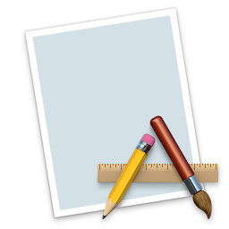
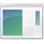
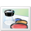
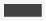
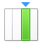
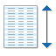
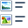

Using System Images
System icons are a way of providing continuity and cohesion in an application. They can be used anywhere an image is needed in Tint. Instead of providing a URL for an image, pass in the name of the icon to use. These are referred to in the documentation as a 'named image'.
| Name | Mac OSX Yosemite | Windows 7 |
|---|---|---|
| action | ||
| add | ||
| advanced | ||
| application |  |  |
| back-inverse | ||
| back | ||
| bookmarks | ||
| caution | ||
| colors |  | |
| computer | ||
| everyone | ||
| folder | ||
| forward-inverse | ||
| forward | ||
| general | ||
| group | ||
| home | ||
| info | ||
| lock | ||
| network | ||
| reload-inverse | ||
| reload | ||
| remove |  | |
| reveal | ||
| share | ||
| status-available | ||
| status-none | ||
| status-partially-available | ||
| status-unavailable | ||
| stop-inverse | ||
| stop | ||
| unlock | ||
| user | ||
| view-as-columns |  | |
| view-as-preview | ||
| view-as-list |  |  |
| view-as-objects | ||
| view-as-tree |  |  |
| trash | ||
| trash-full |